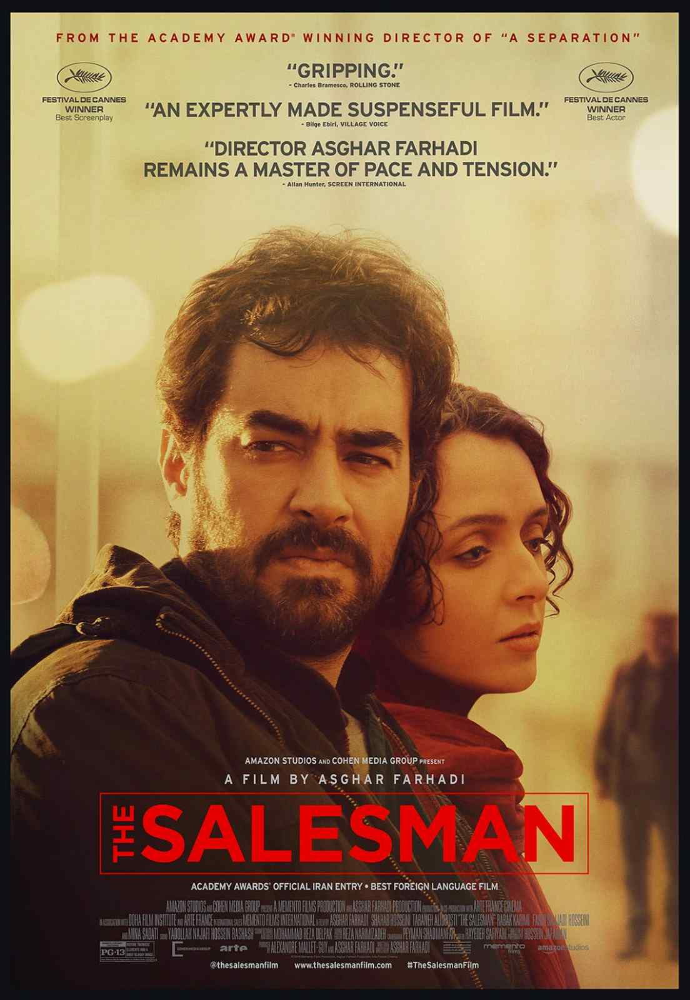

1) The Salesman
If you have seen any Farhadi film before, you already know what you are walking into. Moral discomfort without easy exits. The Salesman is built around a single incident that the film never fully reveals, and that ambiguity is deliberate. It forces you to watch what happens to a marriage when the truth becomes less important than protecting one's own sense of self.
What makes it worth watching is how it refuses to assign blame cleanly. The husband is not a villain. The wife is not just a victim. Both are people making choices that feel reasonable to them in the moment and increasingly difficult to justify as the film goes on. Farhadi understands that most harm is not done by monsters. It is done by ordinary people who have decided their dignity matters more than someone else's.
Start here if you want Iranian cinema that feels immediately grounded and human rather than distant or difficult.
